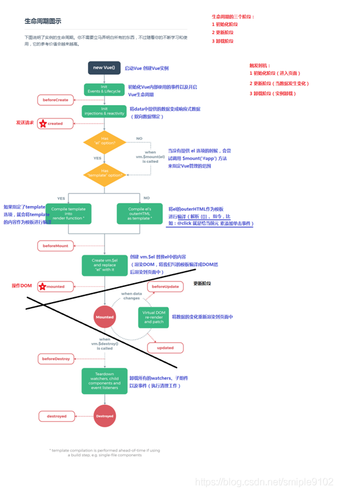

在传统业务中使用jQuery，视图代码和业务逻辑紧耦合在一起，随着功能的增加，直接操作dom会越来越难以维护；
vue使用MVVM的模式拆分视图和数据两部分，将其分离，开发只需关心数据，DOM的事情vue来做
当view（视图层）变化时，会自动更新到viewModel（视图模型），反之亦然。view和viewModel之间通过双向绑定建立联系；
自动识别最新版本 https://unpkg.com/vue/dist/vue.min.js
指定版本 https://unpkg.com/vue@2.5.16/dist/vue.min.js
{{name}}
{{name}}
- {{item}}
var app = new Vue({
el: '#app',
data: {
books: ['vue1', 'vue2', 'vue3'],
name: 123
},
created() {
console.log('from app created');
},
methods: {
changeName() {
this.name = 234
}
}
})

| 生命周期 | 描述 |
|---|---|
| beforeCreate | 组件实例被创建之初，组件的属性生效之前 |
| created | 组件实例已经完全创建，属性也绑定，但真实 dom 还没有生成，$el 还不可用 |
| beforeMount | 在挂载开始之前被调用：相关的 render 函数首次被调用 |
| mounted | el 被新创建的 vm.$el 替换，并挂载到实例上去之后调用该钩子 |
| beforeUpdate | 组件数据更新之前调用，发生在虚拟 DOM 打补丁之前 |
| update | 组件数据更新之后 |
| activited | keep-alive 专属，组件被激活时调用 |
| deactivated | keep-alive 专属，组件被销毁时调用 |
| beforeDestory | 组件销毁前调用 |
| destoryed | 组件销毁后调用 |